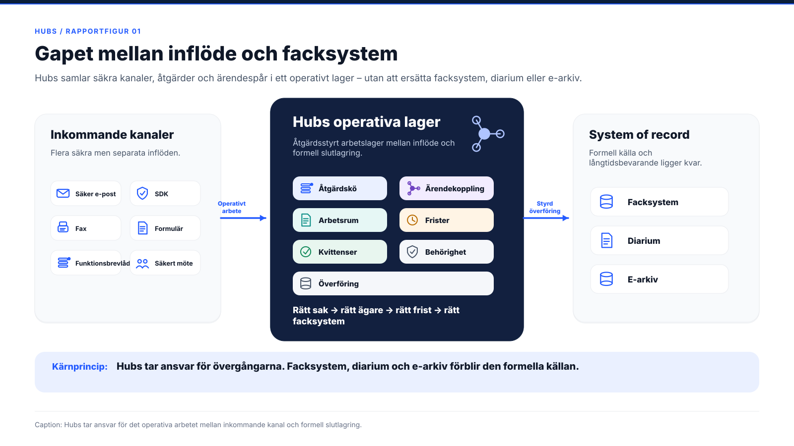
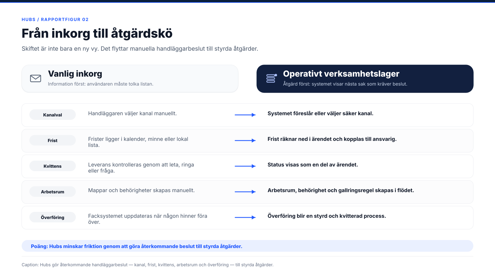
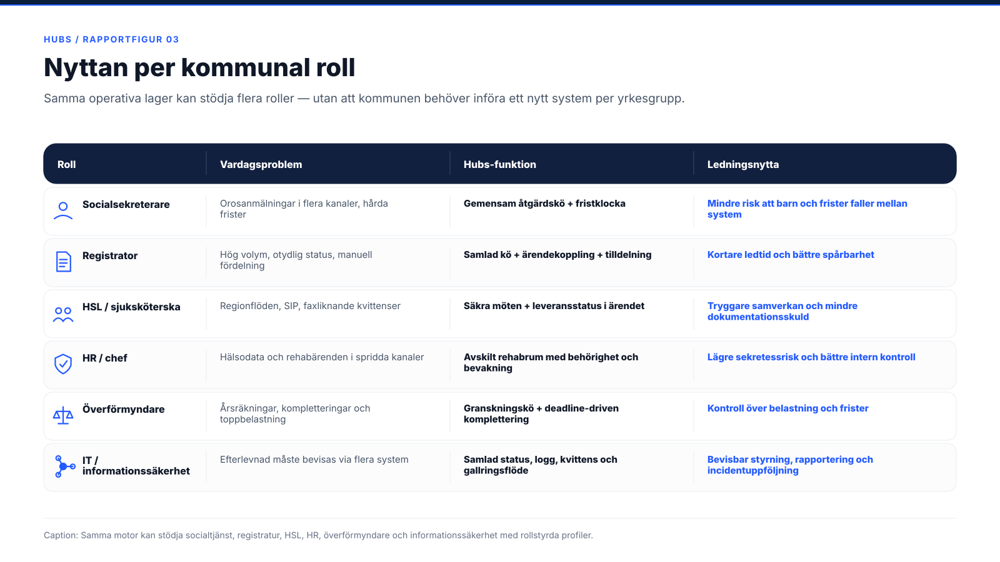
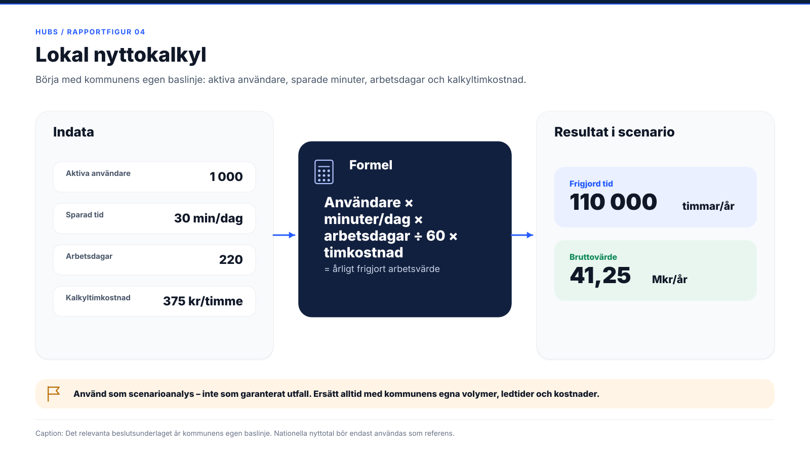
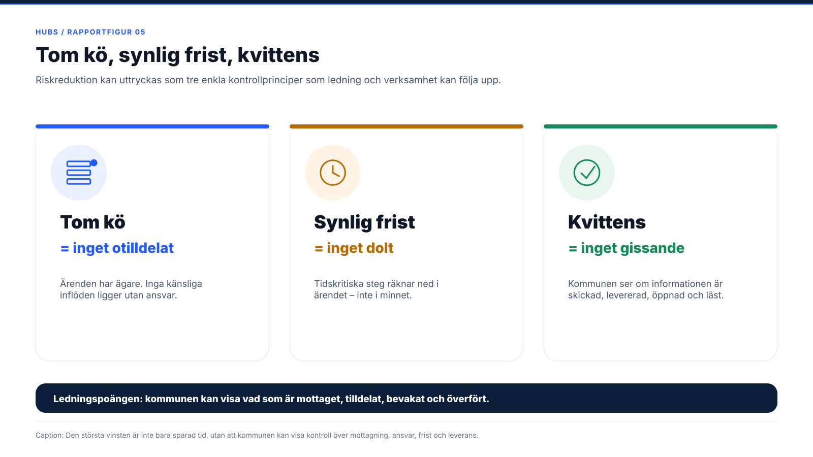
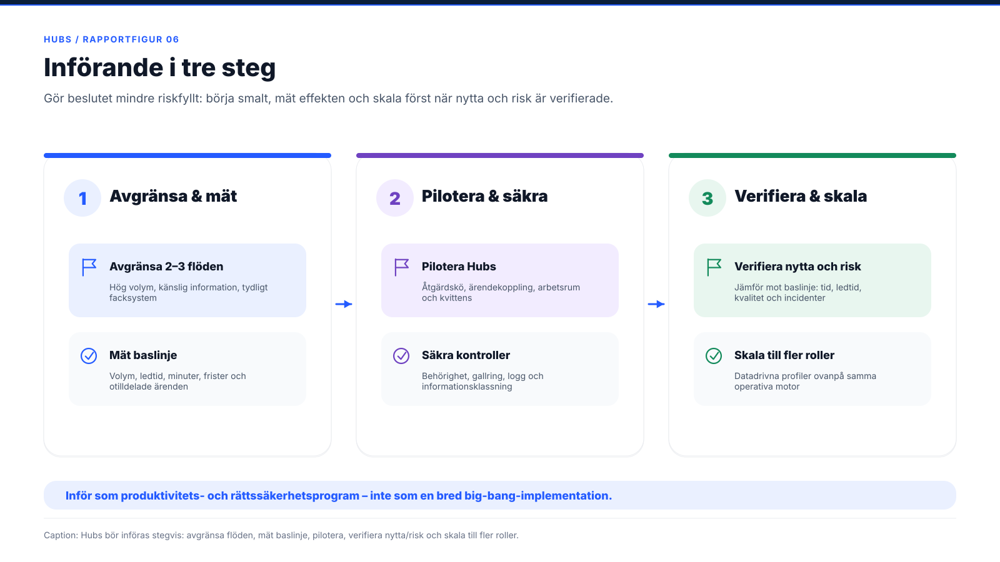

Ett säkert operativt verksamhetslager för offentlig sektor
Hubs stänger gapet mellan det som kommer in till kommunen och det som till slut ska registreras, beslutas, följas upp och bevaras. Ett arbetslager ovanpå facksystemen — inte ännu ett system.
Dokumenttyp
Strategiskt beslutsunderlag
Målgrupp
Kommunal ledning & nämnd
Utgåva
v1.0 · Juni 2026
ITSL Solutions · Säker digital handläggning i egen driftmiljöIntern — för kommunal ledning
ITSL Solutions · Strategisk analys
/Operativt verksamhetslager för offentlig sektorInnehåll
Kärnbudskap
Stäng gapet mellan inflöde och facksystem
Hubs är ett säkert operativt verksamhetslager. Det samlar kommunens säkra kanaler, ärendekoppling, arbetsrum, frister, kvittenser och överföring till facksystem i en gemensam förstavy. Syftet är inte att ersätta facksystem, diarium eller e‑arkiv — syftet är att stänga gapet mellan det som kommer in och det som till slut ska registreras, beslutas, följas upp och bevaras.
Den bärande principen
Kommunen behåller sina facksystem som formell källa, men får ett sammanhållet arbetslager där den dagliga handläggningen faktiskt sker.
Innehåll
01Ledningssammanfattning— tre lager av värde: tid, risk och styrning03
02Vad Hubs är— arbetslagret mellan inflöde och facksystem04
03Problemet Hubs löser— digitala öar och manuella övergångar05
04Från inkorg till åtgärdskö— skiftet från information först till åtgärd först06
05Nyttan per kommunal roll— sex personas, ett operativt lager07
06Kvantifierad nytta— lokal nyttokalkyl och tre värdenivåer14
07Tio värdepunkter & kontrollprinciper— tom kö, synlig frist, kvittens16
08Varför Hubs är svårt att kopiera— styrkan ligger i kombinationen18
09Rekommendation & införande— tre steg, två kortversioner, slutsats19
ITSL Solutions · Strategisk analys
/Ledningssammanfattning01
01
Ledningssammanfattning
Hubs bör utvärderas av kommuner som vill minska administrativ friktion utan att ge avkall på sekretess, rättssäkerhet och kontroll. Värdet uppstår i tre lager.
41,25Mkr/år
Frigjort arbetsvärde i lokalt scenario med 1 000 användare
Scenario — ej garanterat utfall
110tusen h
Frigjord arbetstid per år i samma scenario
30 min × 1 000 × 220 dagar
514tusen
Orosanmälningar om barn i Sverige under 2024
Socialstyrelsen, 2024
~30min
Indikativ tidsvinst per ärende vid kanalbyte
Diggs nyttokalkyl¹
1
Hubs frigör tid
Handläggare slipper de repetitiva övergångar som idag skapar tidsläckage:
öppna flera system varje morgon
välja kanal manuellt
leta efter rätt ärende
skapa mappar och behörigheter
kontrollringa efter leverans
bevaka frister i minnet
dubbelregistrera vid överföring
2
Hubs minskar risk
Fel kanal, fel mottagare, glömd frist eller felsparad information är inte bara ineffektivitet. I offentlig sektor kan det bli:
en sekretessincident
en tillsynsfråga
ett rättssäkerhetsproblem
Hubs gör övergångarna styrda i stället för beroende av minne och lokala rutiner.
3
Hubs stärker styrning
När inflöden, åtgärder, kvittenser, frister och överföringar samlas i ett operativt lager får ledningen data om:
volym och belastning
köstatus per funktion
flaskhalsar i processen
efterlevnad och retention
faktiskt införandevärde
Hubs bör presenteras som ett produktivitets- och rättssäkerhetsprogram — inte som ännu en applikation.
En kommun bör börja i två till tre högvolymsflöden där problemet är tydligt, facksystemet är definierat och informationsklassningen är hanterbar. Därefter kan arbetssättet skalas till fler roller och förvaltningar.
¹ Diggs nyttokalkyl för säker digital kommunikation. Avser kanalbytet (t.ex. fax, rekommenderade brev, bud och telefon som ersätts av säker digital kommunikation). Bör fotnotas mot Diggs primärunderlag i slutlig publicering. Se avsnitt 06.
ITSL Solutions · Strategisk analys
/Vad Hubs är02
02
Vad Hubs är
En verksamhetsplattform för kommuner, regioner och andra offentliga organisationer som hanterar känslig information i flera kanaler. Plattformen består av två delar.
A
Hubs Start — handläggarens förstavy
Här samlas det som kräver åtgärd: inkommande säkra meddelanden, funktionsbrevlådor, kvittenser, säkra möten, tilldelning, bevakningar och ärendekoppling. Handläggaren möts inte av ännu en lista att tolka, utan av nästa sak som kräver åtgärd.
B
Det operativa verksamhetslagret
Det underliggande lagret som håller ihop kanaler, ärendelivscykel, arbetsrum, frister, behörigheter och överföring till facksystem. Det gör att rätt sak hamnar rätt, i tid och med spårbarhet — utan att känslig information behöver lämna kommunens egen driftmiljö.
Hubs ska därmed inte säljas in som ett nytt ärendehanteringssystem. Det ska beskrivas som ett arbetslager ovanpå befintliga system. Det kompletterar facksystemen genom att ta ansvar för övergångarna: från inflöde till ärende, från ärende till arbetsrum, från arbetsrum till beslut, från beslut till facksystem, och från överföring till gallring.

Figur 01Hubs tar ansvar för det operativa arbetet mellan inkommande kanal och formell slutlagring. Facksystemet förblir system of record.
ITSL Solutions · Strategisk analys
/Problemet Hubs löser03
03
Problemet Hubs löser
Digitalisering i offentlig sektor har ofta skapat flera digitala öar snarare än ett sammanhållet arbetssätt. Kommunen kan ha säkra meddelanden, SDK, fax, formulär, video, e‑signering, diarium och facksystem — men ändå sakna en gemensam operativ yta.
01
Säkra kanaler — manuellt arbete emellan
Kanalerna är säkra var för sig, men arbetet mellan dem är manuellt. Handläggaren behöver växla mellan vyer, tolka vad som hör ihop, välja kanal, kontrollera mottagare och följa upp svar.
02
Viktiga steg bärs av minnet
Frister, kvittenser, möteslänkar, behörigheter, gallring och diariekoppling hanteras genom utbildning och lokala rutiner. Dagens material varnar för det användaren “måste” göra rätt — ett tecken på att systemet inte fullt ut skyddar mot fel.
03
Varje överlämning är en risk
En missad kvittens, ett felvalt faxnummer, en bortglömd frist eller en fil i fel arbetsyta är inte bara friktion. I socialtjänst, HSL, HR, överförmyndare och registratur kan det bli en rättssäkerhetsfråga.
Hubs angreppssätt
Hubs adresserar inte problemet genom att lägga ännu ett system ovanpå de andra, utan genom att skapa en kontrollerad operativ yta där kommunen kan styra arbetet mellan systemen.
Varför detta är särskilt relevant för kommuner
Kommunal verksamhet är särskilt lämpad för ett operativt verksamhetslager eftersom kommunen har många funktioner med samma grundproblem men olika regelverk. Socialtjänst, registratur, HSL, HR, överförmyndare, skola, omsorg, bygglov, upphandling och kontaktcenter har olika ansvar — men delar samma praktiska vardag: inflöden från flera kanaler, känslig information, frister, samverkan, dokument, behörigheter och krav på spårbarhet. Hubs underlag pekar på att lösningen kan stödja tolv kommunala roller genom datadrivna profiler ovanpå en gemensam motor, snarare än separata kodflöden per verksamhet.
Ett gränssnitt. Flera roller. Samma driftmiljö. Facksystemen kvar som formell källa.
Det gör införandet mer realistiskt än ett “rip-and-replace”-projekt. Hubs behöver inte ersätta facksystemen — Hubs ska minska friktionen före och mellan dem.
ITSL Solutions · Strategisk analys
/Från inkorg till åtgärdskö04
04
Från inkorg till åtgärdskö
Den centrala skillnaden mellan en vanlig inkorg och ett operativt verksamhetslager är inte främst en UX‑fråga. Det är en styrningsfråga.
Vanlig inkorg — information först
Operativt verksamhetslager — åtgärd först
“Här är 40 meddelanden. Lista ut vad som ska göras.”
“Det här kräver åtgärd nu. Här är rätt knapp.”
Handläggaren väljer kanal manuellt.
Systemet föreslår eller väljer säker kanal.
Frister ligger i kalender, minne eller lokala listor.
Frister räknar ned i ärendet och kopplas till ansvarig.
Kvittens kontrolleras genom att ringa, leta eller fråga.
Leveransstatus visas som en del av ärendet.
Mappar och behörigheter skapas manuellt.
Arbetsrum, behörighet och gallringsregel skapas i ärendeflödet.
Facksystemet får informationen när någon för över den.
Överföring till facksystem blir en styrd och kvitterad del av processen.
Hubs tar bort många små, repetitiva och felbenägna beslut — vilken kanal, var filen ska ligga, vilken frist som gäller, om informationen kommit fram — och gör dem till ett styrt arbetsflöde.

Figur 02Hubs minskar friktion genom att göra återkommande handläggarbeslut — kanalval, frist, kvittens, arbetsrum och överföring — till styrda åtgärder.
ITSL Solutions · Strategisk analys
/Nyttan per kommunal roll05
05
Nyttan per kommunal roll
Värdet ligger inte i en punktlösning för en enskild förvaltning, utan i en gemensam kommunal förmåga som kan växa stegvis. Samma operativa lager stödjer flera roller — utan ett nytt system per yrkesgrupp.
Persona 01
Socialsekreterare — fler anmälningar, hårda frister, hög risk
Orosanmälningar kommer in via flera kanaler och måste bedömas, prioriteras, kopplas till rätt barn eller ärende och hanteras inom lagstadgade frister. Under 2024 rapporterades cirka 514 000 orosanmälningar om barn i Sverige — enligt Socialstyrelsens data vart tionde barn, och en ökning på över 50 procent sedan 2018.
Dagens problem
Hubs arbetssätt
Nytta
Orosanmälningar i flera kanaler.
Gemensam åtgärdskö för inkommande ärenden.
Mindre risk att något missas.
Frister hålls i flera system eller manuella rutiner.
Fristklocka kopplad till ärendet.
Färre missade frister.
Dokument, meddelanden och möten ligger utspritt.
Ärenderum med behörighet, filer, chatt och möten.
Samlad kontext.
Osäker koppling till pågående ärende.
Ärendekoppling och proveniensspår.
Lägre risk för felkoppling.
Budskap till socialnämnd & förvaltningsledning
Hubs frigör inte bara minuter. Hubs minskar risken att barn, frister och känslig information faller mellan system.
Registraturens behov är inte “fler meddelanden”, utan ordning. Det som kommer in ska registreras, fördelas, kunna återfinnas, diarieföras eller avslutas enligt rätt regel. Hubs fungerar som en styrd mottagningsyta där handlingar klassas, fördelas, kopplas till rätt ärende och förs vidare till diarium eller facksystem.
Dagens problem
Hubs arbetssätt
Nytta
Hög volym och många kanaler.
Samlad kö över funktionsadresser och säkra kanaler.
Mindre sortering.
Otydligt vad som redan är hanterat.
Status, kvittens och ansvar per rad.
Färre dubbelhanteringar.
Risk för försenad eller ofullständig registrering.
Metadata och ärendekoppling tidigt i flödet.
Bättre ordning och spårbarhet.
Manuell fördelning till handläggare.
Tilldelning direkt från kön.
Kortare ledtid.
Budskap till kommunstyrelse & registratur
Hubs gör registrering och fördelning till en kontrollerad process i stället för ett beroende av lokala inkorgsrutiner.
HSL‑flöden präglas av samverkan med region, känslig information, faxliknande arbetssätt, SIP‑möten och tidskritiska överlämningar. Hubs ger en gemensam yta för inkommande från regionen, säkra möten, dokument, kvittenser och uppföljning.
Dagens problem
Hubs arbetssätt
Nytta
Regionkommunikation i flera kanaler.
Samlad bevakning av inkommande HSL‑flöden.
Färre missade besked.
SIP och säkra möten kräver flera steg.
Mötesflöde med verifierad identitet och ärendekoppling.
Tryggare möten, bättre spårbarhet.
Fax och manuella kvittenser lever kvar.
Leveransstatus synlig i ärendet.
Mindre ringande och kontrollerande.
Samverkan dokumenteras i efterhand.
Arbetsrum och ärendespår från början.
Mindre dokumentationsskuld.
Budskap till social- & omsorgsförvaltning
Hubs gör samverkan med regionen mer styrd, mer spårbar och mindre beroende av fax, manuella kontroller och lokala minnesregler.
Tid
Mindre fax och kontrollringning.
Risk
Tryggare, verifierade möten.
Styrning
Spårbar samverkan med regionen.
ITSL Solutions · Strategisk analys
/Nyttan per kommunal roll05
Persona 04
HR & chef — avskild hantering av känsliga personalärenden
HR‑flöden har ofta hög sekretess men svag operativ struktur. Läkarintyg, rehabunderlag, anpassningsärenden, företagshälsovård och chefskommunikation riskerar att hanteras i vanlig e‑post eller i spridda mappar.
Dagens problem
Hubs arbetssätt
Nytta
Hälsodata i vanliga kanaler.
Avskild, behörighetsstyrd yta för personalärenden.
Lägre sekretessrisk.
Rehabfrister och uppföljning sköts manuellt.
Fristremsa och bevakning.
Färre missade åtgärder.
Chef, HR, FHV och medarbetare saknar gemensam säker yta.
Säkra rehabrum och möten.
Mindre spridd dokumentation.
Svårt att visa rätt hantering i efterhand.
Logg, kvittens och samlat ärendespår.
Bättre intern kontroll.
Budskap till HR‑direktör & kommunledning
Hubs gör känsliga personalflöden hanterbara utan att de hamnar i öppen e‑post eller informella chefslösningar.
Överförmyndarverksamhet har återkommande toppar, känsliga redovisningar och tydliga frister. Ett operativt lager ger en deadline‑driven granskningskö där kompletteringar, beslut, e‑signering och överföring hålls ihop.
Dagens problem
Hubs arbetssätt
Nytta
Årsräkningar och granskning skapar toppbelastning.
Granskningskö i takt mot frist.
Bättre styrning av arbetsbelastning.
Kompletteringar kommer i flera kanaler.
Samlad ärendeyta med kvittens.
Mindre letande.
Känsliga ekonomiska uppgifter hanteras över tid.
Behörighetsstyrt arbetsrum i egen drift.
Lägre risk för spridning.
Beslut och signering kräver flera moment.
Beslut, e‑signering och överföring som flöde.
Kortare ledtid.
Budskap till överförmyndarnämnd
Hubs ger kontroll över perioder med hög belastning utan att känsliga redovisningar behöver spridas mellan system och personer.
Tid
Kortare ledtid i granskningen.
Risk
Lägre risk för spridning.
Styrning
Styrd toppbelastning mot frist.
ITSL Solutions · Strategisk analys
/Nyttan per kommunal roll05
Persona 06
Förvaltare, IT & informationssäkerhet — efterlevnad, bevis, styrning
För IT, informationssäkerhet och dataskydd är Hubs inte primärt en handläggarapp — det är ett sätt att få operativ kontroll: vilka kanaler används, vad är otilldelat, vilka kvittenser saknas, vilka frister närmar sig, vilka gallringsflöden är aktiva.
Dagens problem
Hubs arbetssätt
Nytta
Efterlevnad måste bevisas genom flera system.
Sammanvägd statusbild.
Snabbare rapportering till ledning.
Gallring och retention är svåra att styra.
Gallring kopplas till verifierad överföring.
Lägre rättslig risk.
Incident- och fristklockor ligger utspritt.
Operativ status i en vy.
Bättre styrning.
Nytta och volym är svår att följa upp.
Statistik på kanal, volym och åtgärder.
Bättre investeringsunderlag.
Budskap till IT‑chef, säkerhetschef & kommundirektör
Hubs gör efterlevnad till en bieffekt av arbetet — inte ett separat uppföljningsprojekt.
Tid
Snabbare rapportering till ledning.
Risk
Lägre rättslig risk vid gallring.
Styrning
Operativ status i en samlad vy.
ITSL Solutions · Strategisk analys
/Nyttan per kommunal roll05
05 · sammanfattning
Sex roller, ett operativt lager
Matrisen visar att detta inte är en IT‑produkt utan en kommunal arbetsmodell: vardagsproblem, Hubs‑funktion och ledningsnytta per roll.

Figur 03Samma motor kan stödja socialtjänst, registratur, HSL, HR, överförmyndare och informationssäkerhet — med rollstyrda profiler i stället för ett nytt system per yrkesgrupp.
Den gemensamma principen
Hubs underlag pekar på stöd för upp till tolv kommunala roller genom datadrivna profiler ovanpå en gemensam motor — värdet är en kommunal förmåga, inte en punktlösning per förvaltning.
Kommunen får därmed en gemensam princip för all känslig handläggning: ett gränssnitt, flera roller, samma driftmiljö och facksystemen kvar som formell källa. Det gör införandet mer realistiskt än ett brett systembyte och gör det möjligt att börja smalt och skala stegvis till fler verksamheter.
ITSL Solutions · Strategisk analys
/Kvantifierad nytta06
06
Kvantifierad nytta
Den mest begripliga kalkylen för beslutsfattare börjar inte med nationella miljardtal. Den börjar med kommunens egen baslinje.
Antagande (exempel)
Värde
Aktiva användare
1 000
Sparad tid
30 minuter per användare och dag
Arbetsdagar
220
Kalkyltimkostnad
375 kr
Frigjord tid
110 000 timmar per år
Bruttovärde
41,25 Mkr per år
Detta ska inte presenteras som garanterat utfall, utan som lokal scenarioanalys. Det viktiga är att modellen är lätt att ersätta med kommunens egna siffror.

Figur 04Det relevanta beslutsunderlaget är kommunens egen baslinje. Nationella nyttotal bör endast användas som referens.
Extern referenspunkt — kanalnyttan
Diggs nyttokalkyl för säker digital kommunikation uppskattar cirka 30 minuter sparad tid per ärende och en nationell potential i storleksordningen 1 620 miljoner kronor eller 3 500 årsarbetskrafter. Detta gäller kanalbytet och bör fotnotas mot Diggs primärunderlag. Hubs‑konceptet lägger till nyttan av arbetssättet ovanpå kanalbytet.
ITSL Solutions · Strategisk analys
/Kvantifierad nytta06
06 · tre värdenivåer
Nyttan i tre nivåer
För ett beslutsunderlag bör nyttan delas i tre nivåer — direkt tidsvinst, riskreduktion och styrningsnytta.
1
Direkt tidsvinst
Tid som faktiskt kan mätas:
färre system att öppna varje morgon
mindre manuell sortering
färre manuella kanalval
mindre sökning efter rätt ärende
färre manuella mappar och behörigheter
mindre kontrollringning efter leverans
mindre dubbelregistrering vid överföring
2
Riskreduktion
Svårare att räkna i minuter — ofta viktigare:
färre felskick
färre missade frister
färre otilldelade ärenden
bättre kontroll över känsliga uppgifter
tydligare bevis på skickat, mottaget, läst, överfört
bättre separation mellan standardflöden och särskilt reglerade flöden
3
Styrningsnytta
Ledningens nytta:
överblick över volymer
köstatus per funktion
flaskhalsar i processen
data för resursfördelning
bättre underlag för upphandling
bättre underlag för informationssäkerhet och efterlevnad
Den största nyttan är inte att varje enskild åtgärd går snabbare.
Den största nyttan är att kommunen får kontroll över alla de små övergångar där tid, ansvar och känslig information annars riskerar att försvinna.
ITSL Solutions · Strategisk analys
/Värdepunkter & kontrollprinciper07
07
De tio starkaste värdepunkterna
Key takeaways för inledning, presentation och beslutsdiskussion.
1
En vy för alla säkra kanaler
Handläggaren ska inte behöva börja dagen i fem olika system.
2
Åtgärd först
Hubs visar vad som kräver beslut — inte bara vad som har kommit in.
3
Rätt kanal från början
Automatiskt eller styrt kanalval minskar felskick och osäkerhet.
4
Ärendet hålls ihop
Meddelanden, möten, filer, uppgifter och kvittenser i samma ärendespår.
5
Frister blir synliga
Frister ska inte ligga i minnet, kalendern eller en lokal lista.
6
Kvittens ersätter kontrollringning
Se om informationen skickats, levererats, öppnats och lästs.
7
Ärenderum skapas i flödet
Säker dokumentyta, behörighet och gallringsregel uppstår som del av ärendet.
8
Facksystemet förblir sanningskälla
Hubs kompletterar — ersätter inte akten, journalen, diariet eller e‑arkivet.
9
Data stannar i egen driftmiljö
Stärker sekretess, datasuveränitet och efterlevnad.
10
Tom kö blir ett styrningsbevis
Kommunen kan visa att inget otilldelat eller tidskritiskt ligger kvar utan ägare.
Riskreduktion kan uttryckas som tre enkla kontrollprinciper som ledning och verksamhet kan följa upp.
Tom kö
= inget otilldelat
Ärenden har ägare. Inga känsliga inflöden ligger utan ansvar.
Synlig frist
= inget dolt
Tidskritiska steg räknar ned i ärendet — inte i minnet.
Kvittens
= inget gissande
Kommunen ser om informationen är skickad, levererad, öppnad och läst.

Figur 05Den största vinsten är inte bara sparad tid, utan att kommunen kan visa vad som är mottaget, tilldelat, bevakat och överfört.
ITSL Solutions · Strategisk analys
/Varför Hubs är svårt att kopiera08
08
Varför Hubs är svårt att kopiera som koncept
Hubs bör inte positioneras som “säker e‑post”, “mötesverktyg” eller “ärendevy”. Då blir det jämförbart med punktlösningar. Styrkan ligger i kombinationen.
↹
Automatiskt kanalval
Tar bort ett av handläggarens mest felbenägna moment. “Smart mottagare” gör kanalvalet till en systemstyrd funktion i stället för ett inlärt beslut.
✓
Kvittens som förstaklassdata
Ger trygghet i den konkreta frågan: kom det fram, till rätt mottagare, och har mottagaren läst?
◫
Ärenderummet binder ihop
Meddelanden, möten, filer och uppgifter per ärende — en samlad kontext.
⬚
Rollbredden
Samma kommun använder samma operativa lager för flera verksamheter — inte en isolerad lösning per yrkesgrupp.
⛨
On‑prem / egen driftmiljö
Gör datasuveränitet och efterlevnad till en del av arkitekturen — inte ett efterhandsargument.
≣
System of record‑respekten
Kommunen behöver inte byta ut facksystemen för att få nytta — vilket gör införandet lättare.
Positionering
Det är kombinationen — kanalval, kvittens, ärenderum, rollbredd, egen drift och respekt för system of record — som gör Hubs svår att reducera till en punktlösning.
ITSL Solutions · Strategisk analys
/Rekommendation & införande09
09
Rekommendation & införande
Hubs bör införas som ett styrt produktivitets- och rättssäkerhetsprogram — inte som en bred big bang‑implementation.
1
Avgränsa & mät
Avgränsa 2–3 flöden med hög volym, känslig information och tydligt facksystem
Mät baslinje: volym, ledtid, minuter, frister och otilldelade ärenden
2
Pilotera & säkra
Pilotera Hubs: åtgärdskö, ärendekoppling, arbetsrum och kvittens
Säkra kontroller: behörighet, gallring, logg och informationsklassning
3
Verifiera & skala
Verifiera nytta och risk mot baslinjen: tid, ledtid, kvalitet, incidenter
Skala till fler roller med datadrivna profiler ovanpå samma motor

Figur 06Börja smalt, mät effekten och skala först när nytta och risk är verifierade.
▮ Kortversion för politiker
Kommunen behöver inte fler isolerade IT‑system. Kommunen behöver ett säkert operativt lager som gör att inkommande information tas om hand, kopplas till rätt ärende, fördelas till rätt person, hanteras med rätt sekretess och förs över till rätt facksystem.
Hubs är ett sådant lager. Det ersätter inte facksystemen — det gör vägen dit sammanhållen. Vinsten är frigjord arbetstid, färre manuella överlämningar, bättre kontroll över frister och kvittenser, lägre risk för felskick och en tydligare bild av vad som faktiskt är hanterat.
▮ Kortversion för media
Hubs adresserar ett växande problem i offentlig sektor: att känslig information fortfarande rör sig mellan flera digitala kanaler, arbetsytor och facksystem där mycket av samordningen är manuell.
Lösningen är ett operativt verksamhetslager. Facksystem och diarium är fortfarande den formella källan — Hubs tar hand om vägen dit.
Frågan är inte om offentlig sektor behöver ännu ett system, utan hur länge kommunerna har råd att låta de mest känsliga övergångarna i handläggningen vara manuella.
ITSL Solutions · Strategisk analys
/Samlad slutsatsSlutsats
Slutsats
Kommunens operativa lager för känslig handläggning
Det är den enklaste och starkaste positioneringen — och den visar varför politiker och ledning ska bry sig: tid, risk, styrning och rättssäkerhet.
→
Mer än säker kommunikation
Hubs är arbetslagret, inte bara kanalen.
→
Konkurrerar inte med facksystem
Facksystemet förblir formell källa.
→
Nyttan kan mätas lokalt
I minuter, timmar, ledtid, otilldelade ärenden och missade frister.
→
Flera personas, samma motor
En kommunal förmåga som växer stegvis.
Det viktigaste budskapet
Hubs gör kommunens mest känsliga övergångar styrbara: från inflöde till åtgärd, från åtgärd till ärende, från ärende till facksystem — och från facksystem till bevisbar uppföljning.
Noter & källor
¹ Diggs nyttokalkyl för säker digital kommunikation: ~30 min sparad tid per ärende; nationell potential i storleksordningen 1 620 Mkr / 3 500 årsarbetskrafter. Avser kanalbytet (fax, rekommenderade brev, bud, telefon → säker digital kommunikation). Bör fotnotas mot Diggs primärunderlag i slutlig publicering.
Orosanmälningar 2024: ~514 000 anmälningar om barn (motsv. vart tionde barn), ökning >50 % sedan 2018. Källa: Socialstyrelsen.
Lokal nyttokalkyl (1 000 användare × 30 min × 220 dagar ÷ 60 × 375 kr = 110 000 h / 41,25 Mkr) är en scenarioanalys, inte garanterat utfall. Ersätt med kommunens egna volymer, ledtider och kostnader.
Rollbredd & arkitektur: Hubs‑underlagets beskrivning av upp till tolv kommunala roller via datadrivna profiler ovanpå en gemensam motor, samt mellanlagerprincipen mot system of record (facksystem, diarium, e‑arkiv).
ITSL Solutions · Strategisk analys — Beslutsunderlag för kommunal ledning · v1.0 · Juni 2026 · Intern
ITSL Solutions · Strategisk analys
Beslutsunderlag · Strategisk analys
Säker digital handläggning — i kommunens egen driftmiljö.
Hubs är ITSL Solutions operativa verksamhetslager: ett sammanhållet arbetslager mellan säkra inflöden och facksystem, helt i kommunens egen drift. Facksystem, diarium och e‑arkiv förblir system of record — Hubs gör vägen dit säkrare, snabbare och mer spårbar.